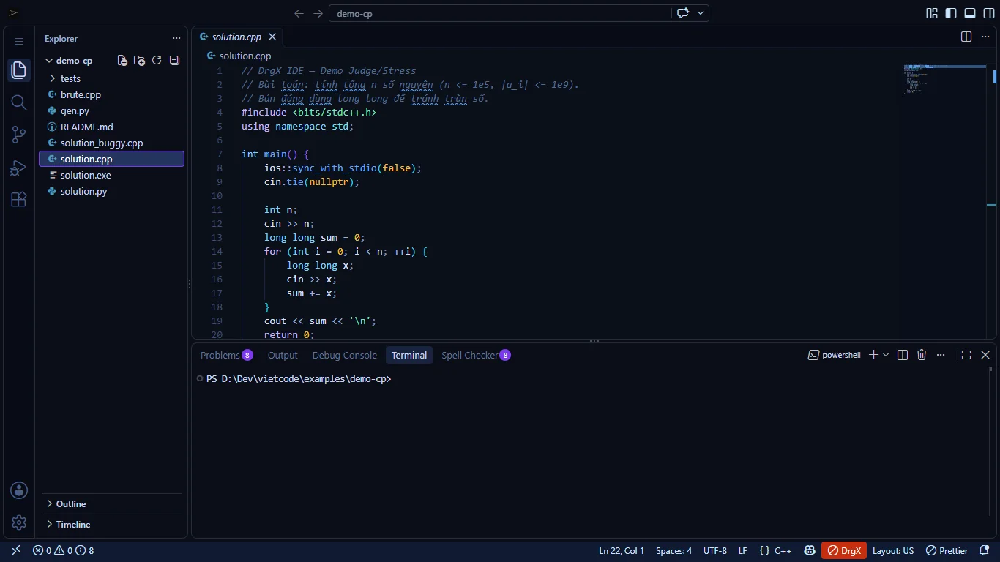
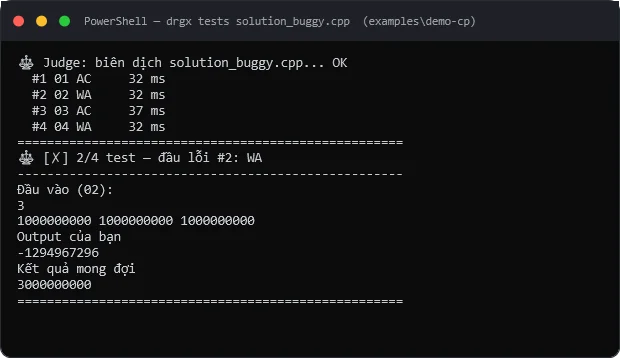
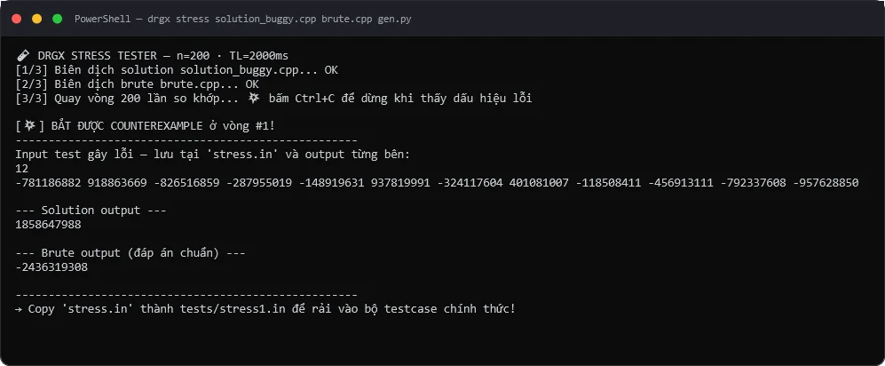
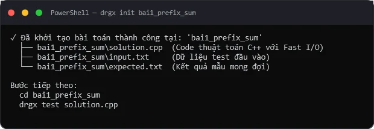
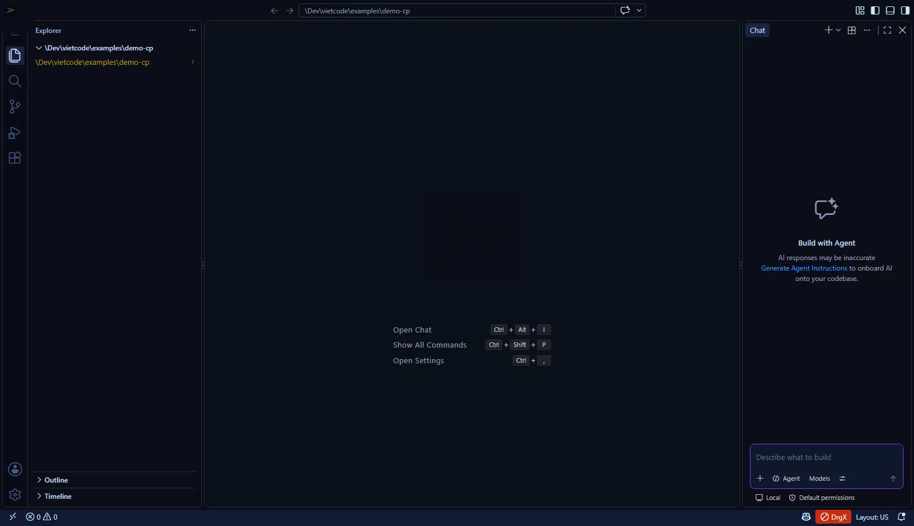

Học có AI. Thi sạch AI.
Hợp nhất trình soạn thảo, trợ lý AI sư phạm, máy chấm C++17 cục bộ (< 0,5s) và phòng thi mạng LAN 40 máy không cần Internet.

Lê Tiến Dũng
Kiến trúc Kép & Điều phối: Định hướng sản phẩm, CP/Dev Studio & thực trạng Phú Thọ.
Lê Bình Minh
Công nghệ lõi & Live Demo: Void-bit C++17 OJ, Stress Test 3 cột & Winnowing.
Nguyễn Minh Quang
Phòng thi LAN, STEM & QA: Exam Server 40 máy, Robot STEM & 68/68 PASS.
Nguyễn Minh Đăng
Tài chính & Truyền thông: Bánh đà B2B2C, Kế hoạch 3 kịch bản, Học liệu & QR.
Dán từng test vào cmd; dễ bị 0 điểm oan trên Themis vì quên freopen hoặc đặt sai tên file.
Mất 30–45′ gom bài 40 máy qua USB/LAN nạp vào Themis; chưa khóa được AI & chưa bắt chép bài đổi biến.
Phòng máy RAM 4GB, khóa quyền Admin, mạng chập chờn; thuê Cloud IDE ngoại tốn 10–20 USD/tháng.
Tách bạch 100%: Học có AI · Thi sạch AI.
DrgX Dev Studio
- Trợ lý AI Sư phạm tiếng Việt & Tự sửa 25 mẫu lỗi C++17: Giải thích nguyên nhân lỗi biên dịch/runtime tức thì (36/36 test E2E)
- Hướng dẫn từng bước (Local-first & BYOK): Gợi ý thuật toán, sinh testcase biên mà không làm hộ bài
- Learn Hub 12 tuần & STEM Robotics: 42 bài giảng, 47 bài tập + mô phỏng Robot 8×8, Arduino/ESP32
100% Profile
DrgX CP Studio
- Khóa sạch 100% mô-đun AI: Loại bỏ hoàn toàn tác tử AI & gợi ý inline từ tầng gói cài đặt phòng thi
- Chấm đa test F9 (0,18s p50): Báo Diff trực quan ngay lúc code, kiểm tra freopen chống 0 điểm oan
- Đồng bộ Exam Server LAN :8765: Nộp bài 1 chạm, lọc đạo văn Winnowing & xuất chuẩn Themis
Một lệnh khởi chạy. 94,3% học sinh chấm AC trong 5 phút đầu.




Qua hết test mẫu. Nhưng vẫn tiềm ẩn lỗi.
Đổi hết tên biến. Vẫn lộ vân tay cấu trúc.
40 máy học sinh. 0 Internet. Thu & chấm 10,4 giây (p50).
Siêu nhẹ 39 MB RAM · Tích hợp STEM · 68/68 Chốt chặn Xanh.
Không thay thế thói quen dùng Themis — Bổ sung trọn vẹn khâu Học & Thi LAN.
| Tiêu chí đối sánh | Hệ sinh thái DrgX | Themis (chấm trên máy GV) | DOMjudge (mã nguồn mở ICPC) | VNOJ / DMOJ (trực tuyến) |
|---|---|---|---|---|
| 1. Hạ tầng & Cài đặt | ✓ Máy Windows · LAN 0 Internet (<60s) | Máy Windows giáo viên | Cần quản trị máy chủ Linux | Cần kết nối Internet ổn định |
| 2. Học sinh tự chấm thử khi làm | ✓ Phím F9 (0,18s) · Báo Diff & freopen | ✕ Chỉ chấm sau khi GV thu bài | Nộp qua giao diện web nội bộ | Nộp qua giao diện web |
| 3. Chế độ thi tắt AI trên máy HS | ✓ CP Studio gỡ bỏ 100% mô-đun AI | Không thuộc phạm vi phần mềm | Tùy cấu hình máy trạm | Không kiểm soát máy khách |
| 4. Stress Test 3 cột & Lọc đạo văn | ✓ Tích hợp sẵn (Winnowing 38ms/40 bài) | Chưa tích hợp quét token | Cần tích hợp công cụ ngoài | Chỉ dành cho quản trị viên |
| 5. Học liệu tiếng Việt & Sửa lỗi C++ | ✓ 47 bài tập, 42 bài giảng, 25 mẫu lỗi | Giao diện Việt, không kèm học liệu | Giao diện Tiếng Anh | Kho bài tập cộng đồng lớn |
| 6. Tương thích quy trình hiện có | ✓ Xuất thư mục $SBD\$BAI.cpp nạp Themis | Chuẩn chấm thi HSG phổ thông | Chuẩn ICPC quốc tế | Chuẩn DMOJ |
Thêm học sinh, chi phí máy chủ ≈ 0 đồng.
• Web & Kiosk sống: drgx-web.netlify.app
• GitHub công khai: LeMinh2k12/Drgx-Startup
• Giải đấu CLB: Mini-Contest 45′ & Tờ rơi QR
• Khớp chỉ tiêu: ≥1.000 lượt cài ≈ 5.000 HS dùng
Kịch bản Cơ sở: 50.000 HS · 80 Trường Năm 3.
| Kịch bản | Doanh thu Năm 2 | Lợi nhuận EBT | Quy mô Năm 3 (2029) |
|---|---|---|---|
| Thận trọng (−30%) | 1.112,2 tr | +90,2 tr |
20.000 HS · 40 trường |
| Cơ sở (Chính) | 1.588,8 tr | +518,8 tr |
50.000 HS · 80 trường |
| Lạc quan (+25%) | 1.986,0 tr | +876,0 tr |
120.000 HS · 150 trường |
• GĐ1 (11–12/2026): Pilot 3–5 trường tại Phú Thọ · GĐ2 (2027): 08 trường, 5.000 HS · GĐ3–4 (2028–2029): 40 → 80 trường.
• 4 KPI Giáo dục: (1) < 5 phút đến bài AC đầu tiên (Pilot 9A2 đạt 94,3%); (2) ≥ 3 bài AC/HS/tuần; (3) < 2 phút GV thu & chấm 40 máy; (4) D7 Retention ≥ 30%.
Mỗi học sinh Việt Nam xứng đáng có
một môi trường lập trình đẳng cấp.
Phương án tự chủ: Ngay cả khi chưa huy động vốn ngoài, kiến trúc Local-First giúp nhóm duy trì vận hành thực tế tại Phú Thọ với chi phí tinh gọn < 20 triệu đồng/năm.
Làm chủ công nghệ lõi. Dữ liệu ở lại trường.
🧩 100% Tài sản Trí tuệ (IP) gốc do nhóm tự phát triển
Nhân chấm C++17 (oj_server.cpp), Stress Engine 3 cột, thuật toán Winnowing token, exam_server.py, bộ công cụ CP/Dev Studio, 5 Giao diện (Skins) và 42 bài giảng VNOI Wiki là tài sản nguyên bản của nhóm.
⚖️ Kiến trúc Tauri 2 (Rust) chuẩn Công nghiệp
Vỏ ứng dụng xây dựng trên nền tảng hệ thống Rust / Tauri 2 kết hợp Win32 JobObject API, bảo đảm hiệu năng nhẹ (tiến trình vỏ ≈ 39 MB RAM) và giải phóng 100% tiến trình con sau mỗi lần chấm.
🔒 Không thu thập mã nguồn mặc định (Zero Telemetry)
Toàn bộ quá trình biên dịch và chấm bài diễn ra cục bộ trên máy trạm học sinh. Trợ lý AI chỉ hoạt động khi người dùng chủ động bật trong Dev Studio; bản CP Studio khóa AI hoàn toàn.
🏫 Tuân thủ Nghị định 13/2023/NĐ-CP
Điểm thi và bài làm của học sinh lưu trực tiếp trên máy chủ giáo viên trong mạng LAN của trường, không đẩy lên đám mây nước ngoài; công bố rõ tại PRIVACY.md.
Không thay thế thói quen cũ — Lấp đầy điểm mù khảo thí.
🧪 Vì sao đã có IDE truyền thống + Themis vẫn cần DrgX?
Themis rất mạnh khi chấm trên máy giáo viên sau giờ thi, nhưng chưa khóa được AI trên máy học sinh, chưa quét đạo văn theo cấu trúc token, và học sinh hay bị 0 điểm oan vì quên freopen / đặt sai tên file. DrgX giải quyết trọn vẹn các điểm mù này và xuất thư mục bài nộp chuẩn 100% cho Themis.
🌐 Vì sao Web OJ (VNOJ, Codeforces) chưa đủ cho phòng máy?
Web OJ rất tốt để luyện đề khi có mạng, nhưng không có IDE kèm theo, mất mạng là phòng máy tê liệt, và không kiểm soát được việc học sinh bật AI ở tab bên cạnh trong giờ kiểm tra.
🤖 Vì sao Cloud AI IDE quốc tế không phù hợp?
AI luôn bật nên không thể dùng làm môi trường khảo thí trung thực; chi phí 10–20 USD/tháng/học sinh vượt quá ngân sách trường công lập.
🛡️ Hào bảo vệ ngách của DrgX
Kiến trúc Kép (Học có AI / Thi sạch AI) + Chấm F9 & Stress Test 3 cột ngay lúc code + Phòng thi LAN tương thích Themis + Web Lab cho máy khóa Admin.
Chủ động nhận diện — Phương án kiểm soát toàn diện.
| Tình huống vận hành thực tế | Cơ chế bảo vệ | Giải pháp kỹ thuật & vận hành của DrgX |
|---|---|---|
| 1. Phòng máy đóng băng ổ cứng / khóa Admin | Đã có Web Lab | Triển khai gói Portable chạy ngay không cần quyền Admin, hoặc bật Web Lab (:8123) trên máy giáo viên để 40 máy học sinh mở trực tiếp qua trình duyệt LAN. |
| 2. Đảm bảo tính nghiêm túc trong phòng thi | 4 Lớp Khiên | Thiết lập 4 lớp bảo vệ khảo thí: Khóa cứng AI ở CP Studio, Verdict do Server giáo viên quyết định, Mã phòng 6 ký tự + chặn gói >512KB, và quét vân tay Winnowing token. |
| 3. Biến động chu kỳ ngân sách trường học | Biên gộp 85% | Kiến trúc Local-first giúp chi phí biến đổi ≈ 0đ; kịch bản thận trọng (−30% khách hàng) ở Năm 2 vẫn lãi ròng +90,2 triệu đồng. |
| 4. Vận hành & bảo trì khi mở rộng quy mô | 68/68 Tự động | Hệ thống kiểm định tự động 68/68 chốt chặn kiểm tra toàn bộ 5 trụ cột trong chưa đầy 30 giây, đi kèm bộ tài liệu hướng dẫn chuẩn hóa và đội ngũ cố vấn đồng hành. |
Số liệu nhất quán 100% — Giả định minh bạch, kiểm chứng được.
| Chỉ số kinh tế đơn vị (Unit Economics) | Mảng Cá nhân — DrgX Pro (B2C) | Mảng Tổ chức — DrgX School (B2B) |
|---|---|---|
| Doanh thu trung bình / khách / năm (ARPU / ACV) | 599.000 đ / năm (~50.000 đ/tháng) | 18.000.000 đ / trường / năm |
| Biên lợi nhuận gộp (Gross Margin) | 85% (Xử lý biên dịch cục bộ) | 82% (Đã trừ chi phí tập huấn & hỗ trợ) |
| Thời gian gắn bó trung bình (Lifespan) | 2,2 năm (Theo chu kỳ lớp 10 → 12) | 3,5 năm (Tỷ lệ duy trì ≥ 85%/năm) |
| Giá trị vòng đời (LTV) vs Chi phí thu hút (CAC) | LTV 1,12 tr · CAC 180k → LTV/CAC = 6,2x | LTV 51,66 tr · CAC 6,5 tr → LTV/CAC = 7,9x |
| Lộ trình quy mô 3 năm (2027 → 2028 → 2029) | Kịch bản Cơ sở: 5.000 → 30.000 → 50.000 HS (8 → 40 → 80 trường) · Kịch bản Lạc quan: 120.000 HS (150 trường) · Tỷ lệ chuyển đổi Pro: 3% → 5% | |
Mỗi trụ cột giá trị — Một bằng chứng sống.
| Trụ cột giá trị cốt lõi | Trọng số tác động | Minh chứng thực nghiệm trực tiếp trên Hệ sinh thái DrgX |
|---|---|---|
| I. Giải quyết triệt để nỗi đau phòng máy | Cấp thiết | Slide S01–S03 & Demo S05–S07: Giảm cài đặt 120′ → 60s; chấm < 0,5s; giải quyết nghịch lý AI; đúng định hướng QĐ 1131/QĐ-TTg. |
| II. Tính khả thi & sẵn sàng vận hành | Chạy thật 100% | Slide S04, S07, S08, S10: Vượt qua 68/68 chốt chặn kiểm định; 11/11 tải đa luồng LAN; tương thích 100% quy trình chấm Themis. |
| III. Đột phá công nghệ lõi & tích hợp STEM | Độc quyền | Slide S03, S05, S06, S08, S09: Kiến trúc Kép (Học có AI / Thi sạch AI); Stress 3 cột; Winnowing token; tích hợp STEM Arduino/ESP32. |
| IV. Hiệu quả tài chính & bình đẳng số | Bền vững | Slide S10–S11: Doanh thu 244,9tr → 1.588,8tr → 7.594,0tr; LTV/CAC 6,2x–7,9x; kịch bản −30% vẫn lãi +90,2tr Năm 2. |
| V. Chiến lược lan tỏa B2B2C tự nhiên | CAC tối ưu | Slide S10: Mô hình Land-and-Expand từ Giáo viên; TikTok 60s bắt test WA; giải đấu DrgX Mini-Contest 45 phút tại các CLB. |
| VI. Đội ngũ thực chiến & Chủ quyền dữ liệu | An toàn 100% | Slide S01, S12, PL1: Đội ngũ 4 thành viên Lớp 9A2 THCS Sông Lô; tuân thủ Nghị định 13/2023/NĐ-CP; Gian hàng 3 Trạm Demo. |